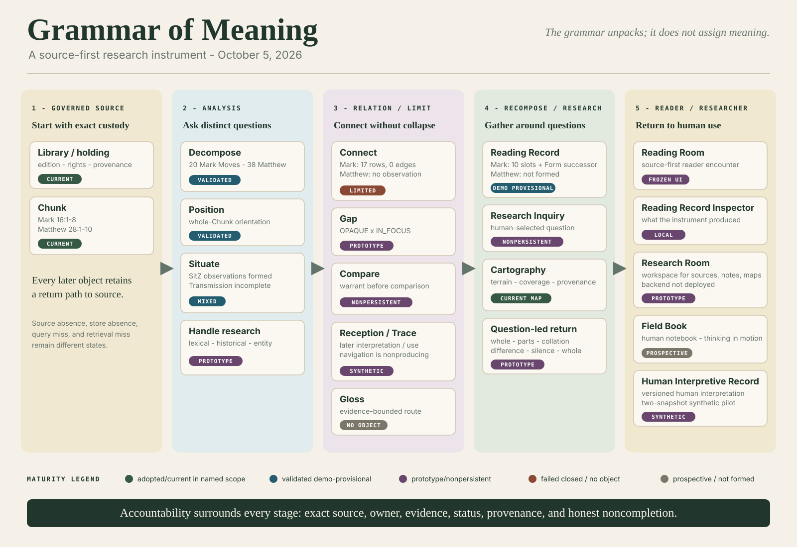
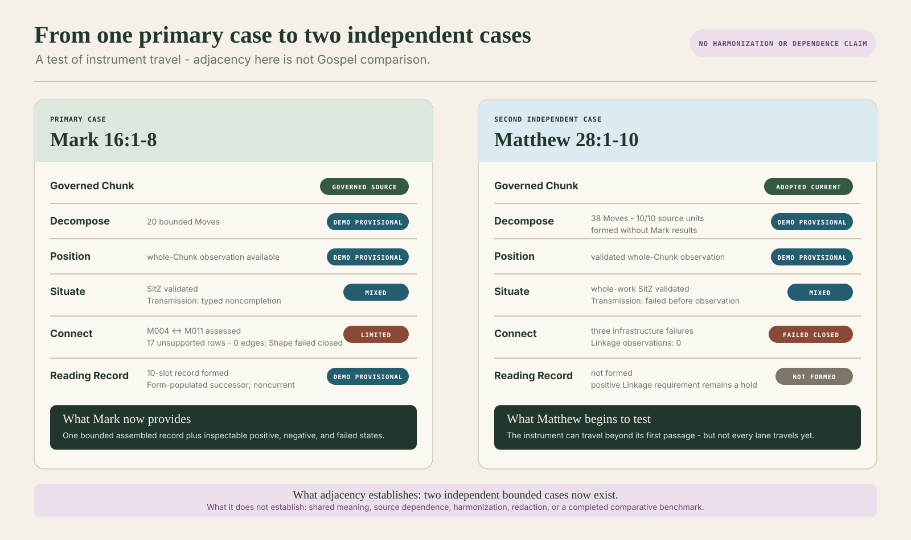
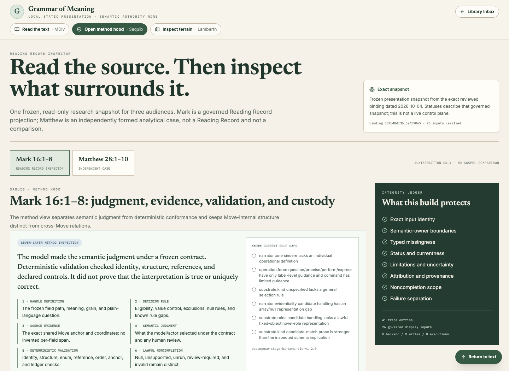
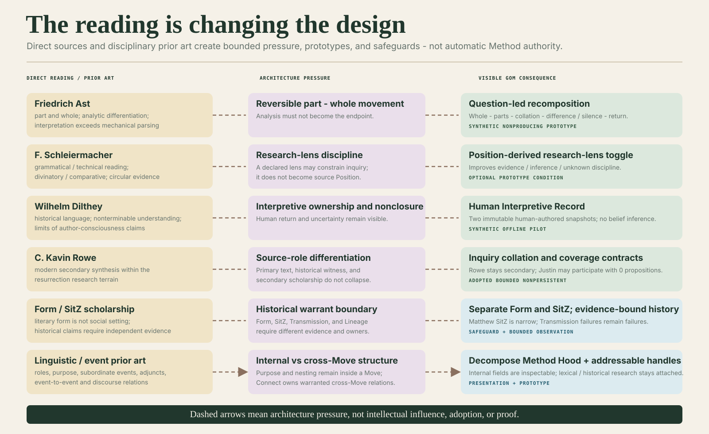
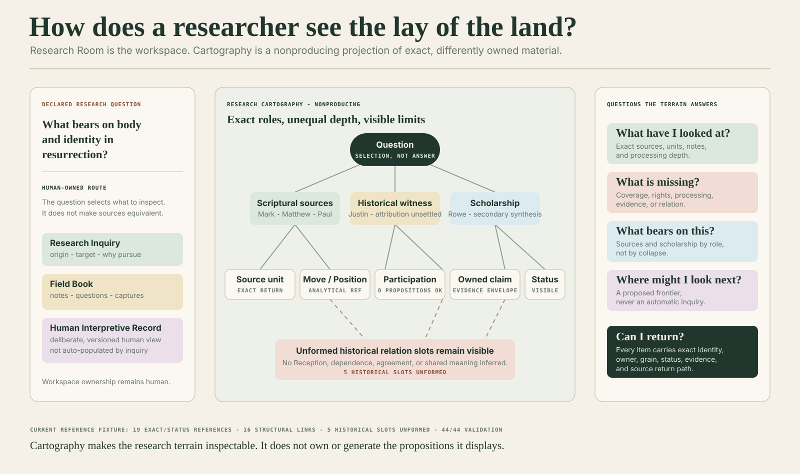
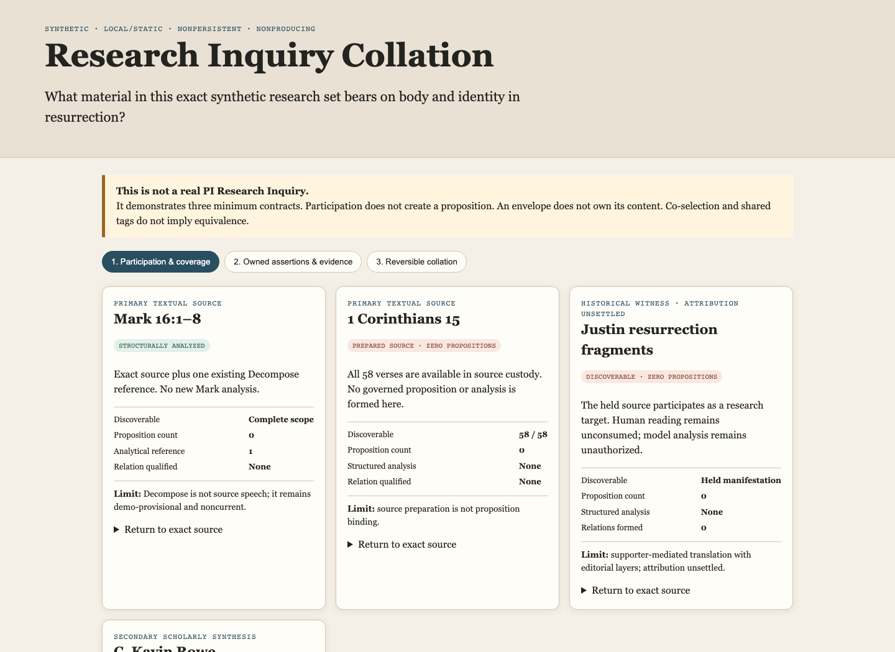
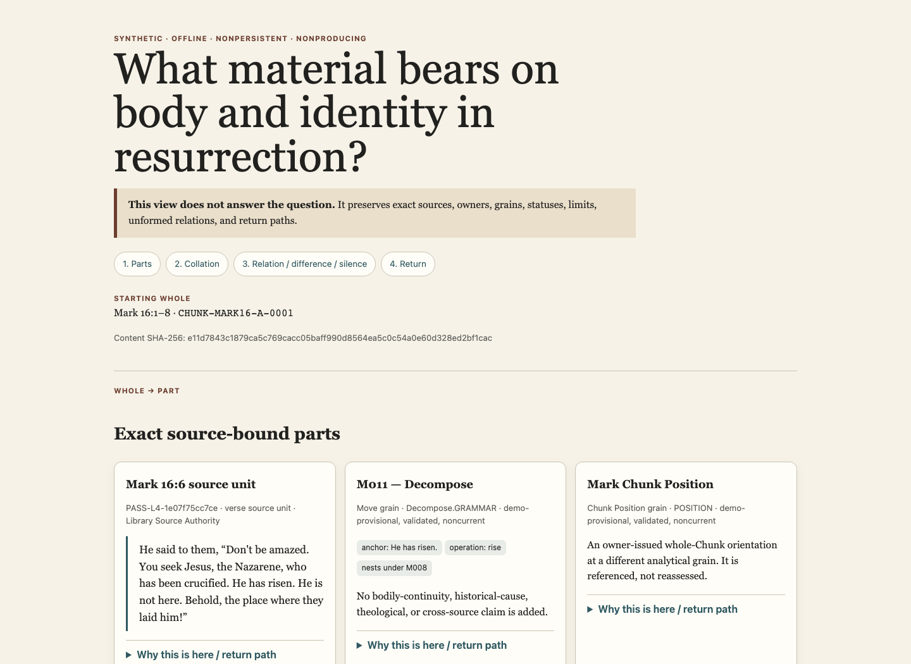
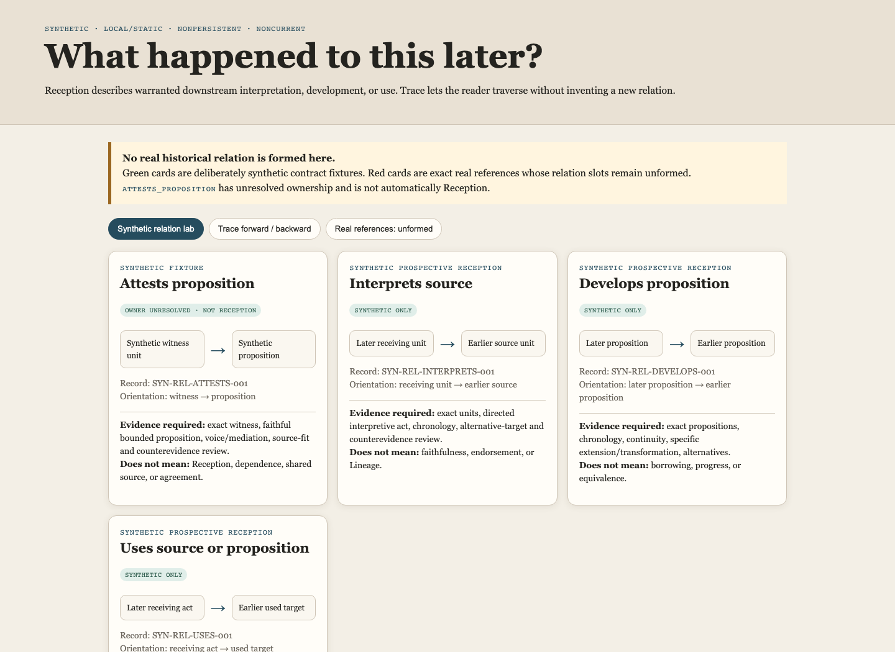
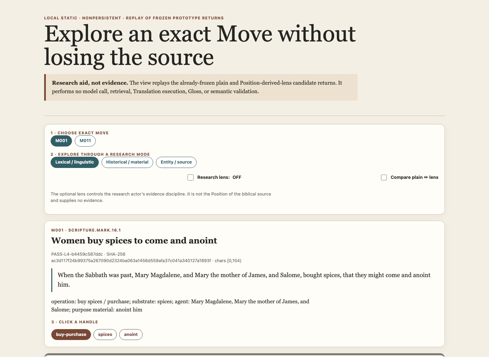
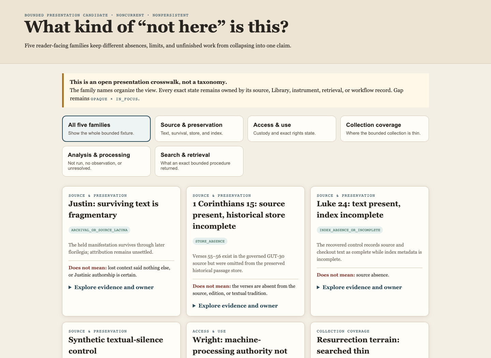

01
A second independent Gospel case
Matthew 28:1–10 now has its own governed source unit, 38-Move decomposition, Position analysis, and bounded historical-context observation.
DEMO_PROVISIONALResearch preview · October 2026
Grammar of Meaning is a research instrument for taking sacred texts apart into inspectable, source-bound observations—and bringing them back together without pretending that evidence, scholarship, computation, and human interpretation are the same thing.
These labels are part of the argument. A working screen is not automatically a scholarly result.
The governing research question
What new forms of interpretation become possible when a sacred text can be analyzed into distinct dimensions and then resynthesized in relation to its contexts, histories, silences, and other sources?
The question has not changed. What has changed is the meaning of resynthesis. It is not one AI-generated answer. It is a reversible path that keeps unlike things visibly unlike.
01
What changed this week
The advance is not one spectacular answer. It is a larger chain of source identity, analysis, inspection, research, and human judgment that can now be demonstrated—and can also stop honestly.
01
Matthew 28:1–10 now has its own governed source unit, 38-Move decomposition, Position analysis, and bounded historical-context observation.
DEMO_PROVISIONAL02
Mark crossed the ten-slot assembly threshold, then formed a successor with its Form component populated and all limitations still visible.
NONCURRENT03
Handles open into lexical, material-cultural, and entity routes. Questions can collate unlike sources without declaring them equivalent.
NONPRODUCING04
Translation, Justin, Matthew Transmission, and Linkage attempts stopped at their governed boundaries rather than becoming plausible-looking observations.
FAILED_CLOSED
02
Instrument travel
Placing them side by side shows whether the instrument travels. It does not yet create a Gospel comparison.
Mark 16:1–8
DEMO_PROVISIONAL20source-bound Moves
Matthew 28:1–10
DEMO_PROVISIONAL38source-bound Moves

03
Method Hood
The hood separates source evidence, semantic judgment, deterministic checks, provenance, and noncompletion.

Exact source evidence
“He has risen.”
Model-semantic judgment
The source operation is classified under the controlled-open Decompose contract. The classification remains an analytical observation, not a deterministic extraction of “the meaning.”
MODEL-SEMANTICDeterministic validation
Validation checks packet identity, schema, allowed states, exact source references, ordering, and completeness accounting.
Deterministic validation is not deterministic semantic derivation.
Lawful limitation
Validation cannot establish that a semantic judgment is uniquely correct. Missing evidence, unsupported relation, and failed execution remain visible rather than being repaired in presentation.
NO FINAL MEANINGSource-bound
→Attributable
→Inspectable
→Fail-closed
04
Scholarship → functionality
Historical and contemporary scholarship creates bounded design pressure. It does not become Method authority merely by appearing nearby.
Ast
Pressed the project to make return paths visible rather than treating decomposition as the endpoint.
Architecture pressure, not adoptionSchleiermacher
Sharpened the distinction between evidence, constructed interpretive lenses, and claims about authorial consciousness.
Source-backed research, not an engineDilthey
Deepened the treatment of historical situatedness, noncompletion, and the limits of extracting meaning from context.
Noncurrent research delta
05
Research Room + Cartography
The Research Room is the workspace. Cartography projects source roles, coverage, provenance, and unformed relations without owning their meaning.

What the machine can read is not the same as what scholarship exists.
Corpus coverageWhat exact bytes may computation inspect?
Bibliographic coverageWhat relevant scholarship is known?
Human accessWhat may the researcher lawfully read?
Machine-processing authorityWhat may be processed computationally?

A declared human question gathers Mark, Paul, Justin, Rowe, and analytical objects at different processing depths. Justin may participate with proposition count zero; Rowe remains secondary synthesis.

Every item answers: Why is this here? Who owns it? At what grain? With what status? How do I return to its source?

Upstream dependence, downstream interpretation or use, and reader navigation remain separate. Paul is not made “Reception of Mark” through theme or chronology alone.
06
Exact-handle exploration
The prototype keeps lexical, material-cultural, and entity routes separate—and returns EVIDENCE_NEEDED when governed evidence is absent.
Exact governed Move
M001 · Mark 16:1
“Mary Magdalene, Mary the mother of James, and Salome, bought spices, that they might come and anoint him.”
Research modes
Lexical · material-cultural · translation
What can be said
The phrase is exact source evidence inside M001 and can anchor separately governed lexical or burial-practice research.
What remains unknown
No historical practice claim is established by the Move or by model memory alone.
Next useful question
What exact, dated historical sources bear on spices used in first-century Jewish burial practice?

07
Working, provisional, failed
A presentation can make absence and noncompletion visible without turning them into negative claims about a source.
For example: the stable Reading Record assembler architecture and persistent nonproducing Cartography.
Mark and Matthew analytical observations remain nonproduction, non-thesis-final, and often noncurrent.
Research Inquiry, collation, Reception/Trace, and Human Interpretive Return have synthetic fixtures.
Infrastructure or contract failure is preserved instead of being semantically repaired.
Not processed, not observed, retrieval nonreturn, and source absence must remain distinct.
Useful for inspection and design testing, but not the project’s semantic source of truth.

What the PI is learning
Decomposition is not the destination. The stronger pathway is to move from the whole, through source-bound parts, into declared questions and qualified relations—and then return.
AI can help make plurality legible. It should not automatically resolve it. The project becomes more trustworthy when evidence, interpretation, uncertainty, missingness, and human judgment remain inspectably different.
This is an emerging thesis-level synthesis, not a production claim or final thesis conclusion.